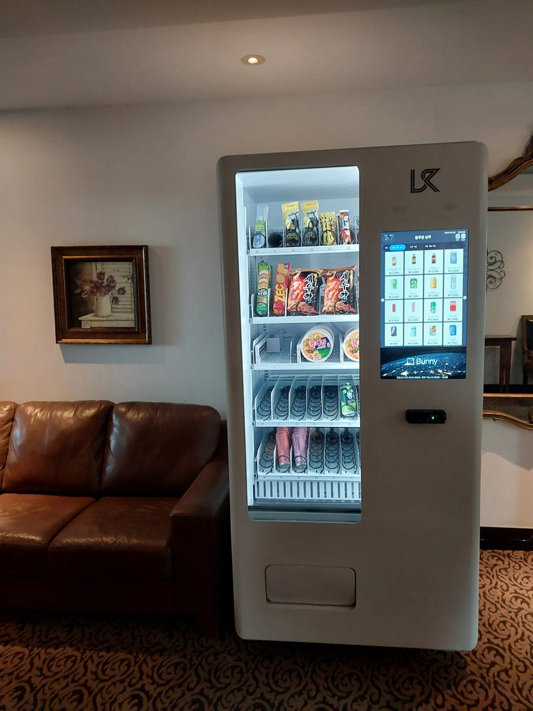

도봉구 무인자판기 설치
볼링장 라운지 냉장 음료·스낵 자판기

볼링장은 기다리는 시간이 유난히 긴 공간입니다. 레인이 빌 때까지, 앞 팀 게임이 끝날 때까지, 일행이 차례를 마칠 때까지. 이 시간에 손님들은 대개 소파에 앉아 있고, 그 상태에서 목이 마르면 밖으로 나가거나 그냥 참습니다. 이번 도봉구 현장에서 사장님이 먼저 꺼낸 이야기도 "카운터에 음료 사러 왔다가 계산이 밀려 그냥 돌아가는 손님이 있다"는 것이었습니다.
그래서 저희가 본 것은 레인 수가 아니라 소파에서 카운터까지의 거리였습니다. 처음 후보는 카운터 옆이었는데, 신발 대여와 계산이 몰리는 자리라 사람이 겹칩니다. 결국 라운지 소파 뒤쪽 벽면으로 옮겼습니다. 앉아서 고개만 들면 화면이 보이고, 일어서면 세 걸음인 자리입니다. 계산 줄과 동선이 아예 섞이지 않는다는 점이 이 위치의 가장 큰 장점이었습니다.
도봉구 볼링장 라운지에 넣은 구성
볼링은 몸을 쓰는 운동이라 찬 음료 비중이 압도적입니다. 생수와 이온음료를 손이 가장 먼저 닿는 중간 칸에 두고, 탄산과 커피를 그 옆에 붙였습니다. 간식은 손에 기름이 묻지 않는 품목 위주로 골랐습니다. 볼링공을 다시 잡아야 하니 과자 부스러기가 남는 품목은 오히려 불편해합니다. 개별 포장 초코바, 젤리, 캔디류가 잘 나가는 자리입니다.
단체 손님이 한꺼번에 몰리는 것도 이 업종의 특징입니다. 회식이나 동호회가 들어오면 짧은 시간에 같은 품목이 비기 때문에, 인기 품목은 한 칸이 아니라 두 칸에 나눠 채웠습니다. 결제는 카드와 간편결제 모두 열어 두었고, 재고와 내부 온도는 휴대폰으로 확인됩니다. 카운터 직원이 자판기를 따로 챙기지 않아도 되는 구조가 핵심입니다.
- 음료 — 냉장 위주. 생수·이온음료를 눈높이 칸에, 탄산·커피는 그 옆에
- 간식 — 손에 묻지 않는 초코바·젤리·캔디 중심. 부스러기 나는 품목은 축소
- 배분 — 단체 손님 대비해 인기 품목은 두 칸으로 분산
- 관리 — 카드·간편결제, 재고·온도 원격 확인, 카운터 업무와 분리
설치하고 나서 확인된 것들
좋았던 점부터 말씀드리면, 카운터 일이 확실히 줄었습니다. 음료 계산이 빠지니 신발 대여와 레인 배정에만 집중할 수 있고, 손님도 줄을 서지 않습니다. 기다리는 손님이 라운지에 머무는 시간이 길어지는 것도 부수적인 효과였습니다. 실내 설치라 시공은 반나절이면 끝났고, 콘센트가 가까워 별도 전기 공사도 필요 없었습니다.
대신 미리 알고 계셔야 할 점이 셋 있습니다. 첫째, 바닥이 카펫이면 수평 잡기가 까다롭습니다. 그냥 올려 두면 미세하게 기울어 문 여닫힘이 뻑뻑해지므로 받침으로 잡아 줘야 합니다. 둘째, 볼링장은 핀 떨어지는 소리와 음악이 계속 나는 공간이라 냉각기 소음은 거의 문제가 되지 않지만, 반대로 기계 알림음이 안 들려 손님이 상품 배출을 놓치는 일이 생깁니다. 배출구 조명이 있는 기종을 권합니다. 셋째, 매출이 주말과 저녁에 심하게 쏠립니다. 평일 낮 숫자만 보고 판단하지 마시고 한 주 단위로 보셔야 합니다.
도봉구, 이런 자리가 잘 됩니다
도봉구는 서울 최북단에 있고 도봉산과 초안산을 끼고 있는 지역입니다. 창동은 창동역과 노원 방면으로 이어지는 상권이 넓게 발달해 있고 실내 여가 시설이 모여 있습니다. 쌍문동은 주거지와 골목 상권이 촘촘히 붙어 있고, 방학동은 대규모 아파트 단지가 중심입니다. 도봉동은 도봉산 등산로 초입이라 주말 유동 인구의 성격이 아예 다릅니다.
볼링장 외에 저희가 권하는 자리도 결국 같은 조건입니다. 사람이 앉아서 무언가를 기다리는 공간이면 됩니다. 실내 스포츠 시설의 대기 라운지, 등산로 초입 상가, 아파트 단지 상가의 공용 공간, 학원 건물의 대기 공간이 그렇습니다. 반대로 통로만 되는 자리는 지나는 사람 수에 비해 결과가 잘 나오지 않습니다.
도봉구 서비스 지역
창동 · 쌍문동 · 방학동 · 도봉동
도봉구 전역에서 방문 상담이 가능합니다. 바로 접한 노원구·강북구와 경기 의정부시·양주시도 같은 담당자가 함께 다닙니다. 지역별 안내는 도봉구 무인자판기 설치 안내 페이지에서 보실 수 있습니다.
도봉구 무인자판기, 이렇게 시작하시면 됩니다
전화나 상담 신청으로 건물 주소만 남겨 주시면 됩니다. 담당자가 나가서 라운지 가구 배치, 카운터와의 거리, 콘센트까지의 거리, 바닥 재질을 확인합니다. 그 자리에 맞는 기종과 품목을 정하고 설치일을 잡으면 끝이며, 설치비는 받지 않습니다. 기계는 구입·렌탈·임대 중에서 고르실 수 있어 초기 비용 없이 시작하셔도 됩니다.
라운지가 좁아 동선을 막을 것 같거나, 카운터에서 음료를 파는 편이 나은 규모라면 그 자리에서 솔직히 말씀드립니다. 한 번 놓으면 자리를 옮기기가 번거로운 기계라, 처음에 위치를 제대로 고르는 일이 설치 자체보다 중요합니다.
※ 사진은 픽프리가 시공한 설치 사례이며, 글에 적힌 지역의 현장 사진은 아닙니다.
함께 많이 찾는 키워드
도봉구 무인자판기 · 도봉구 자판기 설치 · 도봉구 자판기 임대 · 도봉구 자판기 렌탈 · 서울 무인자판기 · 서울 자판기 설치 · 창동 자판기 · 쌍문동 자판기 · 방학동 자판기 · 도봉동 자판기 · 창동역 자판기 · 볼링장 자판기 · 실내 스포츠 시설 자판기 · 라운지 자판기 · 대기실 자판기 · 냉장 자판기 · 생수 자판기 · 이온음료 자판기 · 음료 자판기 · 스낵 자판기 · 무인키오스크 설치 · 스마트 자판기 · 카드 자판기 · 자판기 설치비용 · 자판기 원격관리 · 자판기 렌탈 비용